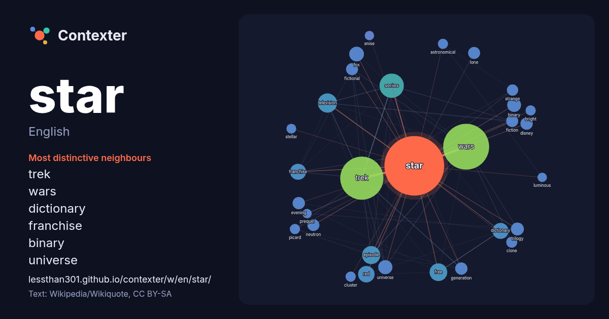

English · word of the day list
star
The words found around it in 1602 instances from English Wikipedia, Wikiquote and Hacker News.

Most distinctive neighbours
- trek 223×
- wars 204×
- dictionary 30×
- franchise 26×
- binary 23×
- universe 21×
- fox 21×
- trilogy 20×
- neutron 18×
- lone 18×
- free 18×
- television 17×
- disney 17×
- episode 16×
- fictional 16×
- clone 16×
- evening 15×
- strange 15×
- red 15×
- series 14×
× = how many times more often than in general English Wikipedia text.
Most frequent neighbours
- wars 263
- trek 233
- film 78
- series 74
- american 46
- television 46
- system 42
- episode 41
- free 39
- red 34
- original 33
- dictionary 32
- franchise 32
- game 31
- fox 27
- set 25
- universe 25
- binary 24
- science 24
- trilogy 21
In context
- A star is a luminous spheroid of plasma held together by self-gravity. The nearest star to Earth is the Sun. Many other stars are visible to the naked Wikipedia snippets · Star
- Look up Star or star in Wiktionary, the free dictionary. A star is a luminous astronomical object. Star, The Star or STAR may also refer to: Star polygon Wikipedia snippets · Star (disambiguation)
- The steroidogenic acute regulatory protein, commonly referred to as StAR (STARD1), is a transport protein that regulates cholesterol transfer within the Wikipedia snippets · Steroidogenic acute regulatory protein
- Star Trek is an American science fiction media franchise created by Gene Roddenberry and owned by Paramount, which began with the series of the same name Wikipedia snippets · Star Trek
- Star Wars is an American media franchise created by George Lucas. The space opera saga began with the original Star Wars film (1977) and quickly became Wikipedia snippets · Star Wars
- "Star Star" (originally titled "Starfucker") is a song recorded by the English rock band the Rolling Stones. It was written by Mick Jagger and Keith Richards Wikipedia snippets · Star Star
- Star+ (Star Plus; stylized as ST★R+) was a short-lived subscription video on-demand over-the-top streaming service available in almost all Ibero-American Wikipedia snippets · Star+
- Star Wars: Starfighter is an upcoming American space opera film directed by Shawn Levy and written by Jonathan Tropper. Produced by Lucasfilm and 21 Laps Wikipedia snippets · Star Wars: Starfighter
More English words
- art
- autumn
- bell
- bread
- bridge
- cat
- city
- climate
- clock
- death
- desert
- dog
- family
- food
- forest
- garden
- god
- gold
- health
- heart
- history
- honey
- horse
- island
- language
- life
- map
- mirror
- money
- mother
- mountain
- nature
- power
- rain
- road
- salt
- science
- shadow
- silence
- song
- storm
- summer
- tea
- time
- train
- truth
- water
- winter
- work
Precomputed on 2026-10-09 with default settings (±5 words, medium corpus). The interactive map can refresh it with live data.